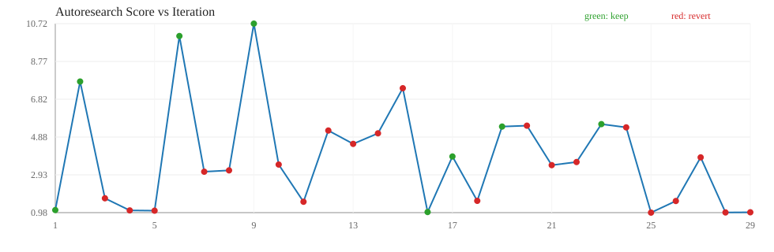

| ts | iter | bucket | proposal | decision | score | lat(ms) | gflops | reason | log messages |
|---|---|---|---|---|---|---|---|---|---|
| 2026-03-18T17:55:52 | 1 | medium | keep | 1.1150 | 5.0186 | 20.3553 | score_improved | iter=1 bucket=medium candidate=blocked|128|128|64|False|False|True|1|2 decision=keep score=1.115048 reason=score_improved | |
| 2026-03-18T17:55:52 | 2 | medium | keep | 7.7358 | 0.6691 | 129.8388 | score_improved | iter=2 bucket=medium candidate=blocked_pack|128|128|128|True|True|False|16|4 decision=keep score=7.735797 reason=score_improved | |
| 2026-03-18T17:55:52 | 3 | medium | revert | 1.7218 | 3.2272 | 31.2117 | improvement_below_threshold | iter=3 bucket=medium candidate=blocked_pack|128|128|128|True|True|False|1|2 decision=revert score=1.721841 reason=improvement_below_threshold | |
| 2026-03-18T17:55:52 | 4 | medium | revert | 1.0970 | 5.0655 | 19.8843 | improvement_below_threshold | iter=4 bucket=medium candidate=blocked_pack|128|128|128|True|True|True|1|1 decision=revert score=1.096956 reason=improvement_below_threshold | |
| 2026-03-18T17:55:52 | 5 | medium | revert | 1.0834 | 5.2060 | 19.9298 | improvement_below_threshold | iter=5 bucket=medium candidate=blocked_pack|128|128|64|True|True|True|1|2 decision=revert score=1.083359 reason=improvement_below_threshold | |
| 2026-03-18T17:55:52 | 6 | medium | keep | 10.0800 | 0.4600 | 146.2463 | score_improved | iter=6 bucket=medium candidate=blocked_pack|128|128|96|True|True|False|16|1 decision=keep score=10.080043 reason=score_improved | |
| 2026-03-18T17:55:53 | 7 | medium | revert | 3.0903 | 1.5085 | 45.1913 | improvement_below_threshold | iter=7 bucket=medium candidate=blocked_pack|128|128|96|True|True|True|4|1 decision=revert score=3.090283 reason=improvement_below_threshold | |
| 2026-03-18T17:55:53 | 8 | medium | revert | 3.1589 | 1.4796 | 46.3727 | improvement_below_threshold | iter=8 bucket=medium candidate=blocked_pack|128|128|96|True|True|True|4|4 decision=revert score=3.158859 reason=improvement_below_threshold | |
| 2026-03-18T17:55:53 | 9 | medium | keep | 10.7186 | 0.4281 | 153.0660 | score_improved | iter=9 bucket=medium candidate=blocked_pack|128|64|128|True|True|False|16|4 decision=keep score=10.718629 reason=score_improved | |
| 2026-03-18T17:55:53 | 10 | medium | revert | 3.4586 | 1.4202 | 54.4106 | improvement_below_threshold | iter=10 bucket=medium candidate=blocked_pack|128|64|64|True|True|True|4|4 decision=revert score=3.458611 reason=improvement_below_threshold | |
| 2026-03-18T17:55:53 | 11 | medium | revert | 1.5427 | 3.6341 | 28.2135 | improvement_below_threshold | iter=11 bucket=medium candidate=blocked_pack|128|64|96|True|True|False|1|4 decision=revert score=1.542699 reason=improvement_below_threshold | |
| 2026-03-18T17:55:53 | 12 | medium | revert | 5.2126 | 0.8872 | 75.3209 | improvement_below_threshold | iter=12 bucket=medium candidate=blocked_pack|128|64|96|True|True|True|16|1 decision=revert score=5.212635 reason=improvement_below_threshold | |
| 2026-03-18T17:55:53 | 13 | medium | revert | 4.5241 | 1.0517 | 68.1507 | improvement_below_threshold | iter=13 bucket=medium candidate=blocked_pack|128|96|64|True|True|False|4|2 decision=revert score=4.524101 reason=improvement_below_threshold | |
| 2026-03-18T17:55:53 | 14 | medium | revert | 5.0682 | 0.9416 | 76.6712 | improvement_below_threshold | iter=14 bucket=medium candidate=blocked_pack|128|96|96|True|True|False|4|2 decision=revert score=5.068156 reason=improvement_below_threshold | |
| 2026-03-18T17:55:53 | 15 | medium | revert | 7.3915 | 0.6203 | 105.4055 | improvement_below_threshold | iter=15 bucket=medium candidate=blocked_pack|128|96|96|True|True|True|16|4 decision=revert score=7.391541 reason=improvement_below_threshold | |
| 2026-03-18T17:55:55 | 16 | large | keep | 1.0130 | 69.0366 | 77.8568 | score_improved | iter=16 bucket=large candidate=blocked|128|64|128|False|False|True|4|1 decision=keep score=1.013028 reason=score_improved | |
| 2026-03-18T17:55:56 | 17 | large | keep | 3.8739 | 18.0154 | 297.3240 | score_improved | iter=17 bucket=large candidate=blocked_pack|128|128|64|True|True|True|16|1 decision=keep score=3.873935 reason=score_improved | |
| 2026-03-18T17:55:57 | 18 | large | revert | 1.5897 | 44.1031 | 122.3730 | improvement_below_threshold | iter=18 bucket=large candidate=blocked_pack|128|128|96|True|True|False|4|4 decision=revert score=1.589665 reason=improvement_below_threshold | |
| 2026-03-18T17:55:58 | 19 | large | keep | 5.4157 | 12.9497 | 416.9885 | score_improved | iter=19 bucket=large candidate=blocked_pack|128|64|128|True|True|False|16|1 decision=keep score=5.415682 reason=score_improved | |
| 2026-03-18T17:55:59 | 20 | large | revert | 5.4619 | 12.8197 | 420.1025 | improvement_below_threshold | iter=20 bucket=large candidate=blocked_pack|128|64|128|True|True|False|16|2 decision=revert score=5.461854 reason=improvement_below_threshold | |
| 2026-03-18T17:56:00 | 21 | large | revert | 3.4280 | 21.1478 | 269.5885 | improvement_below_threshold | iter=21 bucket=large candidate=blocked_pack|128|64|64|True|True|True|16|1 decision=revert score=3.428048 reason=improvement_below_threshold | |
| 2026-03-18T17:56:01 | 22 | large | revert | 3.5890 | 19.3381 | 274.4395 | improvement_below_threshold | iter=22 bucket=large candidate=blocked_pack|128|96|128|True|True|True|16|1 decision=revert score=3.588971 reason=improvement_below_threshold | |
| 2026-03-18T17:56:02 | 23 | large | keep | 5.5419 | 12.3720 | 420.3145 | score_improved | iter=23 bucket=large candidate=blocked_pack|128|96|64|True|True|False|16|1 decision=keep score=5.541878 reason=score_improved | |
| 2026-03-18T17:56:03 | 24 | large | revert | 5.3738 | 12.9793 | 412.2775 | improvement_below_threshold | iter=24 bucket=large candidate=blocked_pack|128|96|64|True|True|False|16|4 decision=revert score=5.373836 reason=improvement_below_threshold | |
| 2026-03-18T17:56:05 | 25 | large | revert | 0.9825 | 71.2086 | 75.5303 | improvement_below_threshold | iter=25 bucket=large candidate=blocked_pack|128|96|64|True|True|True|4|1 decision=revert score=0.982508 reason=improvement_below_threshold | |
| 2026-03-18T17:56:07 | 26 | large | revert | 1.5814 | 44.2905 | 121.6560 | improvement_below_threshold | iter=26 bucket=large candidate=blocked_pack|64|128|128|True|True|False|4|2 decision=revert score=1.581375 reason=improvement_below_threshold | |
| 2026-03-18T17:56:08 | 27 | large | revert | 3.8286 | 18.3415 | 295.0385 | improvement_below_threshold | iter=27 bucket=large candidate=blocked_pack|64|128|128|True|True|True|16|1 decision=revert score=3.828600 reason=improvement_below_threshold | |
| 2026-03-18T17:56:09 | 28 | large | revert | 0.9921 | 70.3243 | 76.1270 | improvement_below_threshold | iter=28 bucket=large candidate=blocked_pack|64|128|128|True|True|True|4|2 decision=revert score=0.992092 reason=improvement_below_threshold | |
| 2026-03-18T17:56:11 | 29 | large | revert | 0.9998 | 70.0837 | 76.9365 | improvement_below_threshold | iter=29 bucket=large candidate=blocked_pack|64|128|64|True|True|True|4|1 decision=revert score=0.999799 reason=improvement_below_threshold |